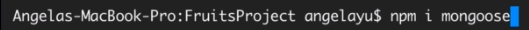

Object Document Model Method And Create Method
First step is to install mongoose using the command line.

Import mongoose to the node js file.

Connect to the local host and specify the name of the database by using forward slash then name at the end of the link \nameDB

Dunno how, but because this is an old version of mongoose, we may need to add additional parameters such as {useNewUrlParser: true}

After this, we can create a new schema, what's a schema you ask? Like SQL, it is a basic setup of the object data you want to import to the database. Here is the syntax.

We could also create a schema inside a schema, if you want a collection of that same schema in a form of an array, we could do...

In this, items store an array of itemsSchema documents.
Then now we could create a model for our schema, this accepts 2 parameters, first is the name of the collection inside the database and another is the schema it needs to follow.

Using our model, we could now insert object data to our database by creating a new instance of the collection model.

After all said and done. we save the data using save method

We can also do this for fun. This prints meow whenever a save is a success.

Here are the permitted Schema types:

We could also insert multiple documents like this in a bulk.

What we need to do is just using CollectionName.insertMany() method

This method accepts an array as its first argument containing all variable names containing the object data, second argument is a callback function that check if an error occurs.
Insertion Validation
Inside our schema, we can specify the limit the value of data inserted to the collection of our database. We do this by setting another pair of curly braces inside the key schema.

String, and Number are both just a shorthand of type: String or type: Number and when we use validator, we need to specify it directly using the exact syntax. Number have valdiator such as min and max that checks wether a vlaue is less or greater than a number.
We can also make a data required in a document, we just need to specify a required key with a value of true, it can also be an array where index 0 is a boolean and index 1 is a message to be printed to the console